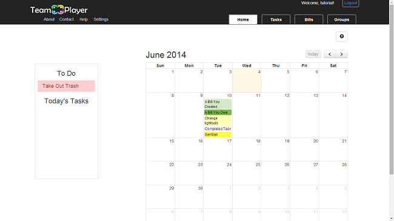

This page acts as our living Software Requirements Specification
What is TeamPlayer?
TeamPlayer is a group-centered web application that allows you to organize the mess of sharing duties and bills between groups of people in your life, such as friends, roommates, sports teams, and coworkers.With our calendar-centered interface, each member can stay up to date with their individual and group tasks as well as the amount of money they owe one another. This decreases the need for all members to remember what everyone was responsible for and also decreases the need to remind other group mates to pay you back, saving time from communication and stress from memory.
Product Description
Who needs TeamPlayer?
Our target audience expands past roommates as a user base, as our product can be used in project groups who need to organize individual tasks, in planning groups that need to plan events and tasks prepared at specific times, as well as friend groups who need to organize trips.
What problem does it solve?
- reduce the time needed to communicate with multiple people
- reduce misunderstandings on who is assigned what task
- reduce the need to remember how much each person has spent and owes
Software Toolset
We decided to make our project a web-based application, because web is cross-platform. We also acknowledged that building well-designed UIs, which will be a large factor over our competitors, is easiest with web languages. Based on our skill set, here are the tools we chose to use to create TeamPlayer:
- HTML/CSS/JavaScript:
- These are the backbone of the frontend of any web application, and will be used heavily to create our application.
- JQuery:
- This is a JavaScript library that will simplify our frontend code by providing helpful functions on Ajax requests, basic animation, selecting elements in the DOM, etc.
- Bootstrap:
- A JavaScript and CSS library originally from Twitter, we will be using some of their default styles and boilerplate code to help aid our design of the website. For example, it is not terribly easy to implement a professional looking button or form in HTML/CSS, but Bootstrap’s provided CSS will help us make the site more professional.
- AngularJS:
- This is a MV* framework for frontend heavy applications. We will use it as both a “frontend PHP” (e.g. HTML with control flow), and to easily inject the data from the backend.
- Ruby/Rails:
- We will use Ruby on Rails as our backend framework. The backend will provide the overall architecture of the site, as well as handle querying the database, and returning the formatted data to the front end.
- sqlite3/PostgreSQL:
- Our data will be very relational, so our ruby on rails backend will this database to store data, sqlite3 for development and PostgreSQL for production. Then we will query it through the ruby functions. The data will solely come from user input, as the application is driven around group task management.
- Git/Github:
- This will function both as our version control and bug tracking system. As noted in lecture, Git is a fairly intuitive and popular version control system. Github's bug tracking system is visual and clear.
- Heroku:
- We will be using Heroku to deploy our app. It has Ruby on Rails already installed, so will simplify the deployment process.
- Jenkins:
- This is a continuous integration system used to deploy automated daily testing on our product. It also sends emails when builds have failed.
Frameworks / Libraries
The main UI challenge will likely be implementing the calendar view. We first discussed Google Calendar, which would send our information and display it on their google calendar, but unfortunately that would allow users to modify their calendar without going through our system. That would immediately render our backend inconsistent with their view, which is a problem we do not want to have.We then came across an AngularJS calendar implementation, FullCalendar, that allowed more control over user access. We use this as the base for our calendar, and add features such as popping up modals to display events on a day. In addition to that, our frameworks (Angular and Rails) and libraries (JQuery), will help prevent us from needing to reinvent the wheel. After getting past the learning curve, these should dramatically reduce the amount of code we need to write. This will be especially important in synchronizing the backend and frontend.From scratch, we will likely need to design/code the frontend views (login, manage groups, calendar, TODOs, and bills). On the backend, we will need to design the database architecture, and how to query it.
Existing Solutions
Alternatives to these problems already exist, like:HomeSlice, which manages a social network between roommates to help with communication. HomeSlice seeks to provide incentive for good behavior and transparency in group dynamics. They provide a whiteboard to help with communication between roommates, a supplies manager to help with who needs to buy what and how much is left, and a chores and bills manager to help facilitate tasks and finances. Their app provides a clean interface for a small community, being roommates, to manage basic tasks. Its advantages are that it provides push notifications to notify community members of tasks they need to do.However, users have complained that the application does not provide the ability to submit one bill for multiple members. Additionally, there’s no way to snooze events.
Google Calendar provides an event based approach in a calendar format. Its advantages include already being widely used, and an integration with other Google software like Gmail. You can create a shared calendar, as well as subscribe to multiple calendars (e.g. a personal one). However, it is weak for groups because it is only task based--there is no concept of “bill management”. It also does not allow for tasks that do not have a specific due date.
Our Solution
Our application will differentiate itself by providing a calendar view of events to facilitate time-dependant tasks. While HomeSlice provides a lot of services for roommates to organize their group, it does not provide a calendar view that could make the application difficult for paying bills on time or completing tasks on time. Furthermore, HomeSlice specifically targets roommates as a user base and not just groups who need to organize events. Seeing as our application works with general tasks and bills and not specifics like supplies, we can reach a wider audience.Major features:
- Group Management
- Create a TeamPlayer group for every group in your life, and all tasks/bills will be centered around these groups. You will no longer have to personally keep everyone up to date with the group's responsibilities. Every member in the group can see what’s going on.
- Cycling and Repeating Task Creation
- For the tasks that you seem to always be the only one doing, like cleaning the bathroom or picking up dinner, you can include your groups in your tasks. In addition to setting deadlines and making them repeat, you have the choice to cycle your tasks. This means that when one person has finished it, the task will automatically be given to the next person.
- Bill Memory and Bill Splitting
- For the outstanding bills people still owe you, and the need to keep track of things that were paid. TeamPlayer compiles expenses paid by and needed to be paid by users. You can see a summary of what people owe you, and what you owe to others.
- Organization
- A main calendar allows you to see all upcoming, current, and past tasks and bills in one place to keep track of your deadlines.
User Interface
Log in
To Do List and Calendar Display
- 
View Information for Each Day
View Your Tasks
View Your Completed Tasks

Adding Tasks
View Your Bills

Adding Bills
Adding Groups and Members
View Your Groups and Members
Confirming Groups

Use Cases
Development Schedule
Our team roles were selected based on interests and experience. Karthik became our project manager because he was interested in understanding the integration of front and back end, and had some experience in other frameworks and API's. Fung, Linsen, and Tiffany were front end developers because they had a bit of knowledge in web development or were interested in visual aesthetics and design. Keith, Micaela, and Panji were back end developers because they had previously taken database classes are were familiar with more development languages. Despite these roles however, members were expected to help one another whenever things needed to get done.
This is a calendar of our development schedule, based on course deadlines and our core featres: group management, login, bill/task creation, calendar display, to do list display, and bill display. The following colors correspond to the topics:

- blue: CSE 403 course deadlines
- green: front end feature deadlines
- red: back end model creation deadlines
- orange: integration and testing deadlines
- purple: TeamPlayer tutorial deadlines
We estimated the amount of time needed to implement our major features based on the following reasons:
- Task & Bill Display/Login = 1 week
- Group Management = 4 days
- Bill/Task Creation = 1 week
- Calendar/To Do List Display = 1-2 weeks
- This merely stores user ID, email, and group names in a database. The system needs to handle group invitations, which can be as simple as sending out emails. This should take 2-3 days but the setup of a working database may require 3-4 days more.
- This ensures accurate viewing of what groups a user is a part of. There is a lot of back end authentication, as well as display and updating after events.
- Creating bills and task are very similar, we need to create a simple UI for inserting data values into the database. Simple forms and validations are easy to implement.
- Displaying calendar takes longer because of the complex ways we can put them on the web app with possible features like monthly, weekly, day views and color coding events and tasks. More importantly, we need to figure out how the data will be stored on database to allow scalability.
Requirements and Schedule Postmortem